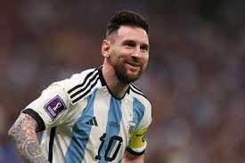

The Legendry player LEO MESSI has confirmed that this will b his last world cup game in his career as a footballer.
messi has many trophies like the coppa america and lots more to his name but he is yet to win the the world cup for his country.
He confirmed that he is very happy to finish his world cup journeys in finals.

The wish from fans that messi carries the world cup to make him an outstanding player increases daily and the player is working very
hard towards achieving this big dreams of his.